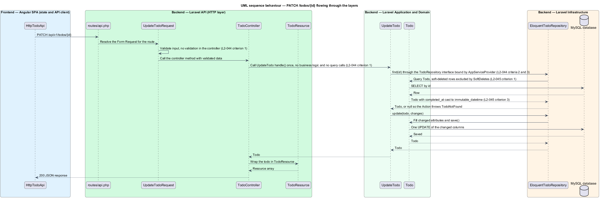

Attribute routing, model binding and FluentValidation, mapped onto the HTTP layer
Route::prefix('v1')->group(function (): void {
Route::get('todos', [TodoController::class, 'index']);
Route::post('todos', [TodoController::class, 'store']);
// Static paths first, so `completed` and `restore` are never read as an id.
Route::delete('todos/completed', [TodoController::class, 'destroyCompleted']);
Route::post('todos/restore', [TodoController::class, 'restoreMany']);
Route::patch('todos/{todo}', [TodoController::class, 'update'])->whereUlid('todo');
Route::delete('todos/{todo}', [TodoController::class, 'destroy'])->whereUlid('todo');
Route::post('todos/{todo}/restore', [TodoController::class, 'restore'])->whereUlid('todo');
});
[Controller::class, 'method'] per route, controllers only, never closures/api by withRouting(api:), so the group yields /api/v1/...todos/completed wins over todos/{id} whatever the declaration ordertodos/{todo} declared first would read completed as an id // Static paths first, so `completed` and `restore` are never read as an id.
Route::delete('todos/completed', [TodoController::class, 'destroyCompleted']);
Route::post('todos/restore', [TodoController::class, 'restoreMany']);
Route::patch('todos/{todo}', [TodoController::class, 'update'])->whereUlid('todo');
Route::patch('todos/{todo}', [TodoController::class, 'update'])->whereUlid('todo');
C#
[HttpPatch("{id:guid}")]
public IActionResult Update(Guid id, UpdateTodoRequest body)
UpdateTodoTest: "returns 404 problem details for an unknown, deleted, or malformed id"app/Http/Requests/Api/V1rules() returns field → rule listValidationException → 422 problem details with errorsModelState checks, ever| Approach | Rules live in | Typed values |
|---|---|---|
| Data annotations | DTO attributes | the DTO |
| FluentValidation | a validator class | the DTO |
| Form Request | a request class | the same class, via accessors |
/**
* A title is 1 to 200 characters after trimming (L2-002). The global TrimStrings
* and ConvertEmptyStringsToNull middleware trim it first, and `max` counts characters.
*/
final class StoreTodoRequest extends FormRequest
{
/**
* @return array<string, mixed>
*/
public function rules(): array
{
return [
'title' => ['required', 'string', 'max:200'],
];
}
public function title(): string
{
return $this->string('title')->toString();
}
}
null through the middleware and fails requiredmax:200 counts Unicode characters: 200 emoji pass$request->title(): never all(), never input('title')string at the call sitepublic function rules(): array
{
return [
'status' => ['sometimes', 'string', Rule::enum(TodoStatus::class)],
];
}
public function status(): TodoStatus
{
return $this->enum('status', TodoStatus::class) ?? TodoStatus::All;
}
sometimes: validate only when presentRule::enum: the value must be a backing value of TodoStatusAll?status=bogus → 422 with a status error (ListTodosTest)public function rules(): array
{
return [
'title' => ['required_without:completed', 'string', 'max:200'],
'completed' => ['required_without:title', 'boolean:strict'],
];
}
/**
* @return array{title?: string, completed?: bool}
*/
public function changes(): array
{
$changes = [];
if ($this->has('title')) {
$changes['title'] = $this->string('title')->toString();
}
if ($this->has('completed')) {
$changes['completed'] = $this->boolean('completed');
}
return $changes;
}
{} failsboolean:strict rejects "yes" and 1; JSON true passeschanges() carries only the keys that were sent, typed by an array shapeJsonIgnore condition, or JSON Patchpublic function rules(): array
{
return [
'ids' => ['required', 'array', 'list', 'min:1', 'max:500', $this->distinct(...)],
'ids.*' => ['required', 'string', 'ulid'],
];
}
/**
* One pass over the list; the per-item `distinct` rule compares every pair, which
* costs too much at 500 ids (L2-038).
*/
private function distinct(string $attribute, mixed $value, Closure $fail): void
{
if (is_array($value) && count($value) !== count(array_unique(array_map(
fn (mixed $id): mixed => is_string($id) ? strtolower($id) : $id,
$value,
), SORT_REGULAR))) {
$fail('The :attribute field must not contain duplicates.');
}
}
ids.* validates every element$fail callbackdistinct is quadraticauthorize(): single-user project, and a missing method means authorisedfinal class TodoController extends Controller
{
public function index(ListTodosRequest $request, ListTodos $listTodos): TodoCollection
{
return new TodoCollection($listTodos->handle($request->status()));
}
public function store(StoreTodoRequest $request, CreateTodo $createTodo): JsonResponse
{
$todo = $createTodo->handle($request->title());
return (new TodoResource($todo))->response()
->setStatusCode(201)
->header('Location', url("/api/v1/todos/{$todo->id}"));
}
public function update(UpdateTodoRequest $request, string $todo, UpdateTodo $updateTodo): TodoResource
{
return new TodoResource($updateTodo->handle($todo, $request->changes()));
}
public function destroy(string $todo, DeleteTodo $deleteTodo): Response
{
$deleteTodo->handle($todo);
return response()->noContent();
}
| Method | Receives | Returns | .NET analogue |
|---|---|---|---|
index | ListTodosRequest, ListTodos | TodoCollection (200) | Ok(dto) |
store | StoreTodoRequest, CreateTodo | JsonResponse 201 + Location | CreatedAtAction |
update | UpdateTodoRequest, string $todo, UpdateTodo | TodoResource (200) | Ok(dto) |
destroy | string $todo, DeleteTodo | response()->noContent() (204) | NoContent() |
restore | string $todo, RestoreTodo | TodoResource (200) | Ok(dto) |
destroyCompleted | ClearCompletedTodos | ClearedTodosResource (200) | Ok(dto) |
restoreMany | RestoreTodosRequest, RestoreTodos | TodoResource::collection (200) | Ok(dtos) |
Return types on every method; L2-044 caps each method at ten lines, no logic, no queries.
public function update(
UpdateTodoRequest $request,
Todo $todo,
)
public function update(
UpdateTodoRequest $request,
string $todo,
UpdateTodo $updateTodo,
)
find() or findDeleted(), then TodoNotFound
{todo} precedes completed or restore$request->all() or input() in a controller: unvalidated keys slip throughboolean instead of boolean:strict: "yes" becomes a completion flagwhereUlid, controllers onlyMediatR handlers and Clean Architecture use cases, mapped onto app/Actions/Todos and TodoRepository.